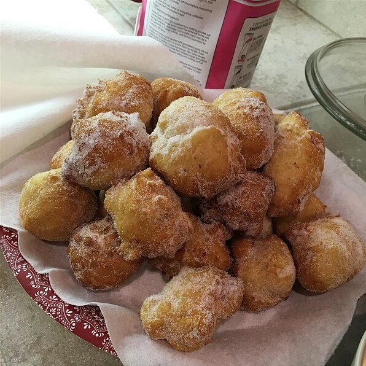

Back to Homepage
Filhóses

Description
Filhóses, sometimes referred to as malassadas, are fried dough sprinkled with white sugar and cinnamon. They're similar to donut holes or funnel cake. Filhóses are typically considered "street food", so you aren't likely to find these delicious treats in just any restaurant. Instead, you may have more luck with festivals, food trucks, and even some cafés. Filhóses are typically made around Christmas, so they are seasonal, but there's nothing stopping you from creating these tasty goodies any time you're craving them. Keep reading to see how easy filhóses are to make!
Ingredients
- 1 (.25 ounce) package active dry yeast
- 1 teaspoon white sugar
- ¼ cup warm water (110 degrees F/45 degrees C)
- 6 eggs
- 6 cups all-purpose flour
- ½ cup white sugar
- ¼ cup butter, melted
- 1 cup evaporated milk
- 1 cup water
- 1 teaspoon salt
- 2 quarts vegetable oil for frying
- 2 cups white sugar
Steps
- Dissolve yeast and 1 teaspoon sugar in 1/4 cup warm water; set aside.
- In small bowl, beat eggs until thick.
- Put flour in large bowl, making a well in the center. Into the well add yeast, eggs, 1/2 cup sugar, melted butter, milk, 1 cup water, and salt. Beat thoroughly to form a soft, smooth dough. Cover, let dough rise until doubled.
- Heat oil to 375 degrees F (190 degrees C). Drop dough by big teaspoonfuls into oil, fry until golden brown. Drain on paper towels, shake in a bag of sugar to coat, and serve hot.